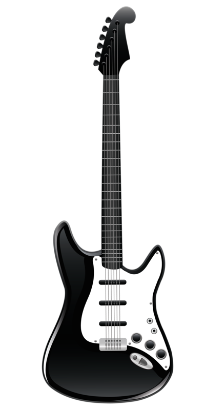
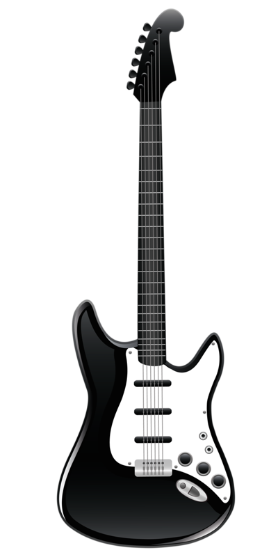

Welcome to my website. I make sound collages, music, and other audio projects. I work in live sound and am learning how to make my own speakers and audio hardware. Here on this website you can access my work as I post it. Thanks!
Time Capsule
this is the final project of my Bachelor's degree. Its a sound collage using sounds recorded during my final semester at school. Using binaural in ear microphones, I collected ambience, conversations, and any other sounds to create a library. Pulling sounds from the library allowed me to craft them into a collage, which acts as a time capsule of my final moments of college. LISTEN WITH HEADPHONES (to get binaural effect)


 
